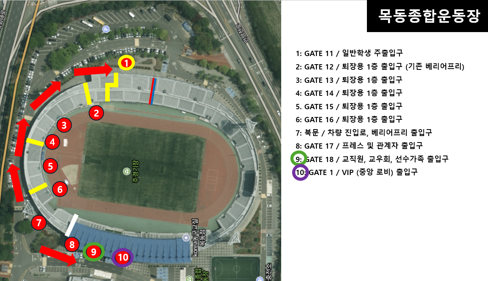

2026 정기 고연전 주경기장 스태프 배치
사용방법: 이름 검색 → 개인 위치 확인 → 시간대별 역할
현재 배치표 기준
홈으로
본인 이름을 입력한 뒤 검색 결과를 선택해주세요.
이름을 검색해주세요.
역할별 기준
역할을 누르면 바로 아래에서 세부내용·위치·시간대별 배치 인원을 확인할 수 있습니다. 같은 역할을 다시 누르면 닫힙니다.
구역별 안내자료
E구역 자료
N구역 자료
W구역 자료
목동종합운동장 기본 도면

×